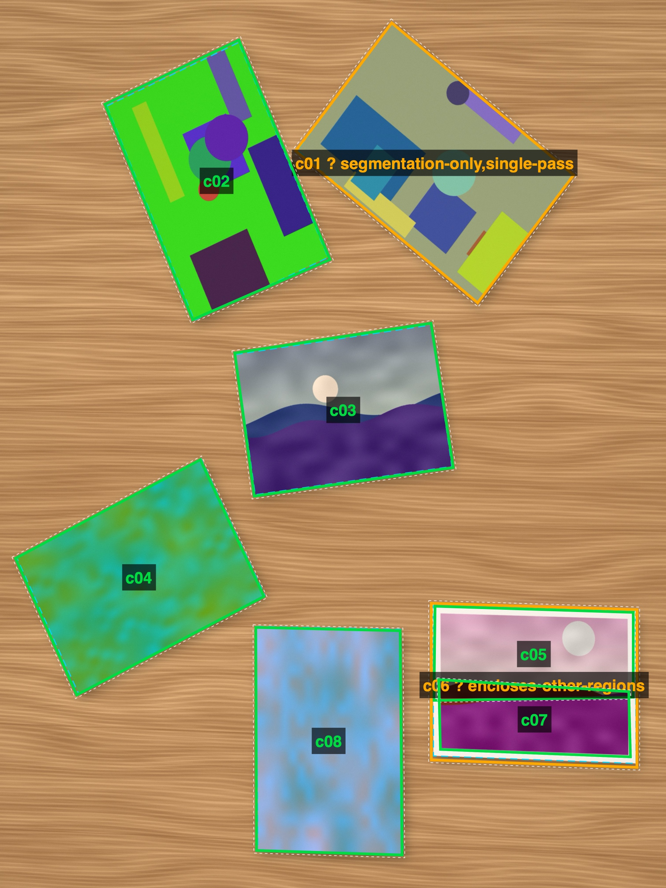

PhotoBomb
iPhone app / In development
Turn a table full of printed photos into separate digital pictures.
Scan several prints at once
Lay out several prints, take one picture, and let the app find each photo and straighten it into its own image. Importing an existing picture works too.
PhotoBomb processes photos on the iPhone and keeps originals in its local library. You can save individual crops to Photos or share them through the iOS share sheet.
Keep control of the crop
Automatic detection is a starting point. Drag the corners to correct a crop, remove an extra detection, or add a print the app missed. The original stays available for another pass.
The rendering pipeline uses Lanczos resampling and saves lossless PNG crops. Sessions organize a batch of captures, with zoomable views for inspecting the originals and extracted photos.

Built with
Swift and SwiftUI, with Apple Vision for detection and a custom Lanczos renderer. The app is in development.